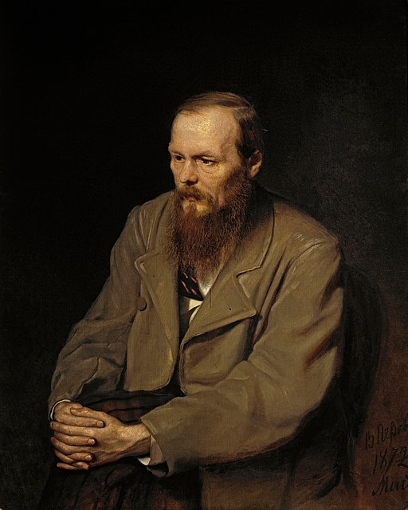

Fyodor Dostoevsky
One of Russia's greatest novelists

Fyodor Dostoevsky, a giant literary figure renowned in Russia and all over the world.
The Events in the Life of Fyodor Dostoevsky
- Fyodor Dostoevsky born on November 11, 1821
- September 27, 1837: Begins to attend the free Nikolayev Military Engineering Institute
- August 12, 1843: Takes a job as a lieutenant engineer
- June 1843: completes his first literary work, a translation of Honore De Balzac's novel "Eugenie Grandet."
- May, 1845: Completes his first novel, "Poor Folk."
- April 23, 1849: Arrested on the grounds pf circulating copies of a Banned Letter
- December 23, 1849: Sentenced to die by a firing squad, but pardoned at the last moment
- 1849-1853: Spends 4 years in exile with hard labour at a prison camp in Omsk
- September 1867: Begins work on the "Idiot."
- 1880: Finishes his last and possibly greatest novel, "The Brothers Karamazov."
- Dies on January 25, 1881